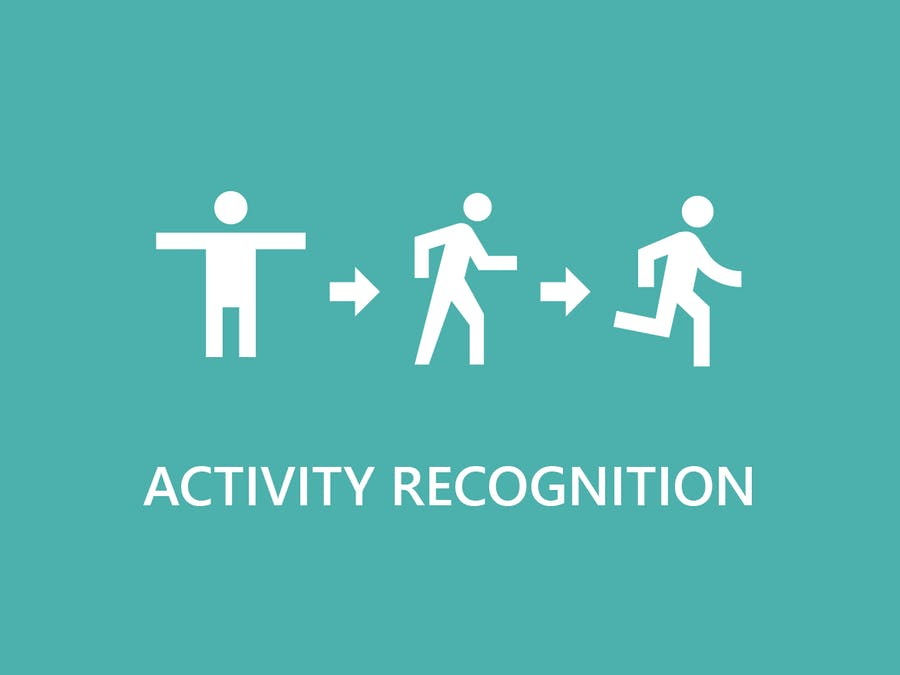

Phone applications nowadays can show you how many steps user have walked, ran, flights of stairs you have climbed, calories burnt, etc. On a similar line with growing demand of wearable technology, I built a classifier from scratch which is based on data from sensors already deployed in smartphones and smart watches able to identify the user activity. By working on this project I gained practical knowledge of building classifiers and implemented machine learning concepts.
Currently the Accuracy of these human activity classifiers are about 85% and improving them has many hurdles. Some of these being:
1. High sampling rate of data is required, so more data needs to be processed every second.
2. As dealing with physical attributes of users, the sensors used in the smartdevices vary greatly, a bias can greatly affect accuracy of a classifier.

Goodreads dataset is a comprehensive dataset containing information about books, authors, genres, ratings and other measures that readers across the globe are interested
in and would help them make a better decision about which book to consider next for reading. I have utilized MS BI tools (SSIS, SSAS, SSMS) to ETL data and design ad-hoc reports and multidimensional OLAP cubes to drill down and roll up on different dimensions to create useful measure analysis.

Farmer’s markets are defined as fixed locations where several farmers gather to sell their own products at recurring times. These are often located in the middle of cities and towns. Some markets are open seasonally,
while others are open on weekends or daily, especially those located in big cities. Farmer’s markets are a fundamental part of the urban–rural interface, they have continued to grow in popularity, mostly due to the growing consumer
interest in obtaining fresh products, especially produce directly from the farm. Analysis is conducted to to understand various metrics like distribution of the farmer market across US, Products Availability, Online social media presence and various payments methods utilized across Farmers market in the US.

In this project I performed Covid 19 Data Exploration in SSMS using Joins, CTE's, Temp Tables, Windows Functions, Aggregate Functions, Creating Views, Converting Data Types.
In this project we are designing and managing an E-Commerce database that helps the Director of Supply Chain and Business Operations of the company to address problems and take strategic business decisions with respect to
Inventory Control
Customer Satisfaction
Real time product stock information
Order management
Supplier management
On-time delivery performance
Employee Responsibility
Machine learning App designed using Streamlit library of Python, that predicts Hospital stay period using attributes like Customer Demographics, patient severity, etc.

This contains all my Tableau Dashboards and storyboards.